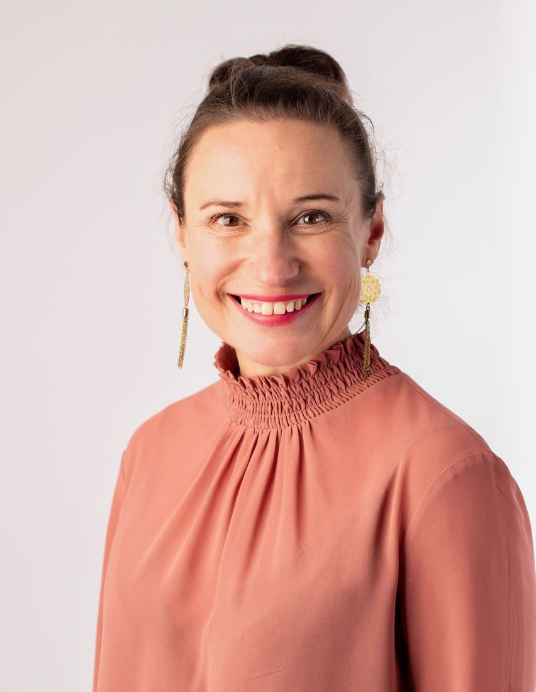

Energilyftet
För dig som vill hitta tillbaka till din energi.
Vi ringar in vad som tar och ger dig energi, sätter konkreta mål och bygger nya vanor som fungerar i din vardag.
Coaching för dig
Coaching är som en PT för din mentala träning. Tillsammans reder vi ut det som blockerar dig och skapar en väg mot det liv du vill leva.

Känner du igen dig?
Du presterar mycket – på jobbet, hemma och för andra. Men energin räcker inte riktigt till.
Vad som förändras
Så arbetar vi
Vad är viktigt för dig? Vi tydliggör dina värderingar och vart du vill.
Vad tar och ger dig energi? Vi bygger nya vanor och använder kroppen för att hitta lugn i vardagen.
Energin sprids – till dina relationer, din familj och ditt jobb, och den kommer tillbaka till dig.
Du berättar vad du behöver och vi känner in om det känns rätt.
Lite längre – vi tittar på ditt nuläge och vad du vill fokusera på.
Med övningar och reflektion mellan träffarna.
Du märker förändringen – och har verktyg för lång tid framåt.
Upplägg
För dig som vill hitta tillbaka till din energi.
Vi ringar in vad som tar och ger dig energi, sätter konkreta mål och bygger nya vanor som fungerar i din vardag.
För dig som redan coachats och vill hålla i förändringen.
Enstaka samtal när livet ställer nya frågor eller när du vill stämma av dina nya vanor.
Online eller på plats i Stockholm.
Kundröster
”Det här har varit mer värdefullt än något annat i mitt liv. Jag mår bättre än jag gjort på länge och gör mer medvetna val över var jag lägger min energi.”
Maria, 52
”Nu hittar jag lättare det fokus jag behöver för att kunna stressa mindre och planera bättre, och ta mig ur situationer där jag tidigare hade svårt att finna lugnet.”
Robin, 32
”Jag älskar att vi började varje session med en kort meditation! Du fick mig att göra något praktiskt snabbt. Jag lever mycket närmare så som jag vill leva idag.”
Åsa, 45
”En livfull, energigivande och driven, utmanande coach som hjälper dig att hitta din väg framåt genom nya perspektiv. Jobbar med direkt kommunikation och är väldigt behaglig.”
Anja, 38
”Väldigt bra närvaro. Modig och vågar utmana dig. Bidrar till att du hittar din balans i livet och blir ditt bättre jag.”
Göran, 44
”Med hjälp av sitt utforskande, orädda och nyfikna sätt hjälper hon dig att hitta din väg framåt genom nya perspektiv och utmaningar.”
Leif, 47
Vanliga frågor
Det styrs av dina behov och förutsättningar. Energilyftet är 6 samtal under tre månader, men vi gör ett upplägg som fungerar för dig.
Båda fungerar – online eller på plats i Stockholm.
Coaching handlar om nuet och vägen framåt: dina mål, vanor och val. Om du mår mycket dåligt är samtal med vårdcentral eller psykolog rätt första steg.
Coaching är ett partnerskap. Därför börjar vi alltid med ett kostnadsfritt samtal där vi känner in om det känns rätt.
Boka ett första kostnadsfritt samtal. Att sätta ord på din situation är ditt första steg.